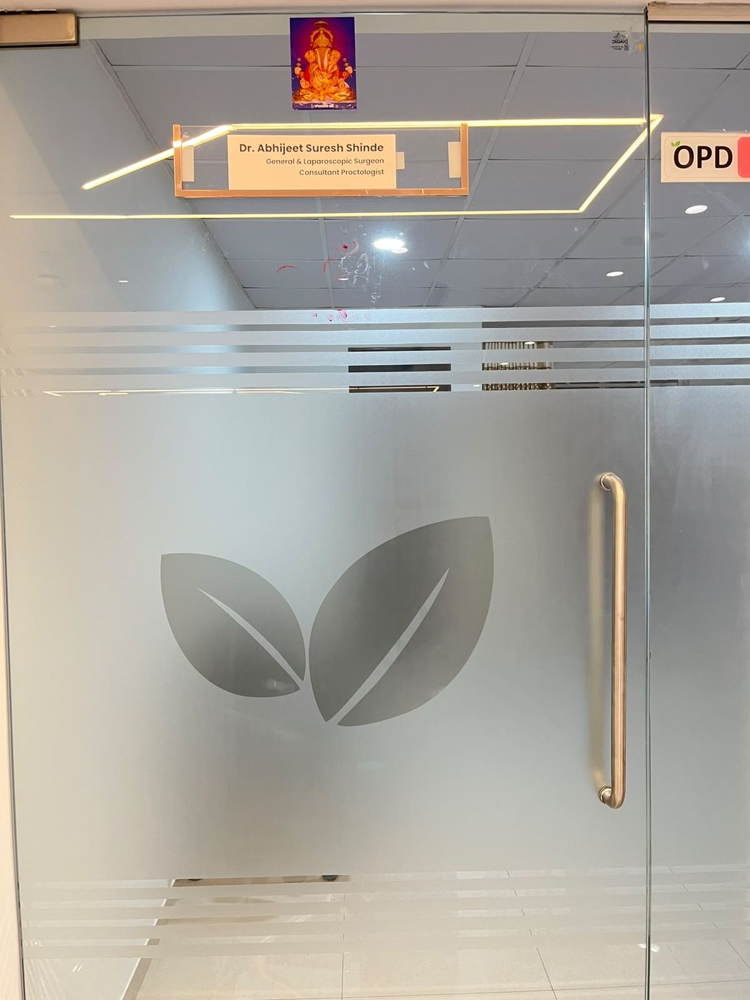

Intersphincteric
The tract runs between the two sphincter muscles. The most common type.
In short: Assessment of anal fistula, with MRI where needed, and repair chosen to cure the tract while protecting bowel control. After a private examination, we explain the right option for you.
Led by Dr. Abhijeet Suresh Shinde, General & Laparoscopic Surgeon and Consultant Proctologist.
An anal fistula is an abnormal tunnel between the inside of the anal canal and the skin near the anus. It usually follows an abscess and causes recurring discharge, pain and swelling.
Fistulas rarely heal on their own. Treatment depends on how the tract runs in relation to the sphincter muscles, with the aim of curing the tract while protecting bowel control.
A tract that crosses only a small part of the muscle. Often treated with a straightforward procedure.
A tract that crosses more muscle, branches or keeps recurring. Needs mapping and careful planning.
Anal Fistula is not the same for every patient. Knowing which approach suits you helps us plan treatment properly.
The tract runs between the two sphincter muscles. The most common type.
The tract crosses both muscles. Needs a careful, muscle-sparing plan.
A high tract that loops over the muscle. Needs specialist planning.
A rare tract outside the muscle, often linked to another cause.
A fistula with persistent pain, fever or bowel disease needs prompt assessment; it should not be self-treated with creams or antibiotics alone.
Several conditions can feel alike. This table is a rough guide; only an examination can confirm the cause.
| Feature | Fistula | Abscess | Fissure |
|---|---|---|---|
| Main complaint | Recurring discharge | Painful, swollen, hot lump | Sharp pain with stools |
| Pain | Throbbing when pus collects | Severe and constant | Marked after stools |
| Discharge | Common, on and off | Pus when it bursts | Rare |
| Usual cause | Past abscess or infection | Infected gland near the anus | Hard stool, tear in the lining |
Most fistulas begin as an abscess in a small gland inside the anal canal. When the abscess drains, a tunnel can remain.
Some are linked to bowel disease, past surgery, injury or infection, which is why a proper examination matters.
Diagnosis is simple, quick and done in privacy. You are told what is being done at each step.
Past abscesses, discharge pattern, medicines and bowel disease.
Looking for the external opening and feeling the tract.
Maps the tract and its relation to the muscles in complex or recurrent cases.
The tract is classified and the safest repair is explained.
MRI is advised when the fistula is complex, recurrent or unclear on examination.
The choice between non-surgical care and surgery depends on your findings, symptoms and health. This table is a guide, not a prescription.
| Stage | Usual first approach | When a procedure may be considered |
|---|---|---|
| Simple, low tract | Fistulotomy (laying open) | Tract is clear and muscle involvement is small |
| Higher or complex tract | Seton placement | Muscle must be protected while the tract is drained |
| Selected tracts | LIFT, laser closure or plug | Sphincter-saving closure is preferred |
| Recurrent or difficult | Flap procedure after MRI | Other methods have failed |
Many patients start with non-surgical care. It works best in the early stage, and Dr. Shinde starts here whenever it is safe and sensible.

Small daily changes make a big difference to treatment, and they also lower the chance of anal fistula returning.
Good bowel habits help the wound heal and lower recurrence.

A fistula needs a procedure to heal. The choice depends on the tract, the muscle involved and your continence.
| Option | Suited to | Things to know |
|---|---|---|
| Fistulotomy | Simple, low tracts | Highest cure rate for suitable tracts; muscle involvement is small |
| Seton | Complex or high tracts | Drains the tract and protects the muscle; staged treatment |
| LIFT / laser closure | Selected tracts | Sphincter-sparing; success depends on the tract |
Laser closure uses a thin fibre to seal the inside of a suitable fistula tract, without cutting the muscle.
Dr. Shinde holds a Diploma in Laser Proctology and offers laser where it suits the tract.
Private discussion and examination.
Tests only where needed.
Non-surgical or surgical, explained.
Done as day-care where possible.
Recovery checks and guidance.
Recovery depends on the procedure. Simple fistulas heal in a few weeks; staged or complex repairs take longer, with regular dressing and follow-up.

Call us for fever, heavy bleeding, severe pain, increasing swelling or if the wound is not healing.
Call NowGet any anal boil checked quickly.
Fibre and fluids prevent strain.
Keep any bowel condition under control.
Keep the area clean and dry.
Review until the wound has healed.
A fistula does not close on its own. Waiting lets infection return and the tract grow more complex.
Each flare can be painful and need drainage.
Branches can form and need harder surgery.
Skin irritation and soiling continue.
Long-standing fistulas need proper checks.
Antibiotics settle infection, but the tunnel usually needs a procedure.
Techniques are chosen to protect the muscle, and risks are explained.
Boils that keep returning near the anus can be a fistula.
Cure is likely with the right method, but follow-up matters.
Hover or tap a card to see the fact.
There is no single price for anal fistula in Kharadi, Pune. Your surgeon explains the likely cost after examination, once the best treatment is clear. Cost is explained before you decide, not after.
Consult Dr. Abhijeet Suresh Shinde for anal fistula at DISHA Advanced Surgical & Laser Piles Clinic.
General & Laparoscopic Surgeon and Consultant Proctologist with specialised training.
A track record in clinical and surgical experience.
We say when surgery is not needed, and we explain every option.
A calm clinic near Manipal Hospital, Thite Nagar, Kharadi.
Explained after examination and before you decide.

What patients have written about their visit to our clinic in Kharadi, Pune, shown as posted on Google.

DISHA Advanced Surgical & Laser Piles Clinic
1st Floor, OPD No. 2, Survey No. 22/2, Ganga Altus, F Building, Cherry Life, Near Manipal Hospital, Thite Nagar, Kharadi, Pune 411014
Daily: 10:00 AM – 9:00 PM
Antibiotics may settle infection but the tunnel usually needs a procedure to heal.
Techniques are chosen to protect the muscle, and the risk is explained before surgery.
MRI is advised for complex or recurrent fistulas to map the tract accurately.
It can, especially if the tract was complex. The right technique and follow-up lower the chance.
Yes. Every consultation and examination is private, respectful and judgement-free.
Call or WhatsApp +91 97668 15782, or use the online booking form. The clinic is open daily from 10 AM to 9 PM.
Cost depends on the treatment chosen. Your surgeon explains the likely cost after examination, before you decide.
Many procedures are done as day-care or a short stay, depending on your condition and fitness. Your surgeon will advise.
A short, private consultation with Dr. Abhijeet Suresh Shinde in Kharadi, Pune.
This page is general information and does not replace a personal medical opinion. Treatment decisions are made after examination.